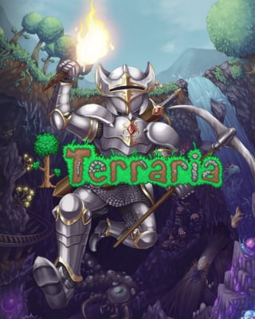

O gênero RPG é um dos mais populares do mercado de games, e conta com muitos fãs espalhados pelo mundo. Esse tipo de jogo surgiu primeiro nos tabuleiros, em que as pessoas se reuniam em volta de uma mesa para jogarem juntas, mas foi levado também aos videogames, se transformando e ganhando outras nuances únicas, RPG é a sigla em inglês para role-playing game, um gênero de jogo no qual os jogadores assumem o papel de personagens imaginários, em um mundo fictício.

Stardew Valley é um RPG sem fim da vida no campo! Você herdou a antiga fazenda de seu avô no Vale do Orvalho. Equipado com ferramentas de segunda mão e algumas moedas, você irá começar sua nova vida. Será que você consegue aprender a viver da terra e transformar esses campos absurdamente vegetados em uma casa próspera? Não vai ser fácil. Desde que Corporação Joja veio à cidade, os antigos modos de vida quase desapareceram. O Centro Comunitário, uma vez o lugar mais visitado da cidade, agora está em ruínas. Mas o vale parece cheio de oportunidades. Com um pouco de dedicação, você pode ser a pessoa que restaurará a grandeza do Vale do Orvalho!

Pokémon White Version 2 leva os jogadores de volta para a região de Unova, dois anos depois de Pokémon Black Version e Pokémon White Version. Embora este jogo decorra numa região familiar, existirão muitas áreas novas a descobrir e alterações nos locais que já conheces. Uma área nova é a Virbank City, berço dos Pokéstar Studios, estúdios estes que poderás visitar. Terás até a possibilidade de criar e de protagonizar o teu próprio filme com os teus Pokémon preferidos e estreá-lo no cinema do jogo. O público atribuir-lhe-á depois uma classificação com base nas escolhas de argumento e nas sequências de jogadas em batalha. Se o filme tiver sucesso, poderás rodar mais filmes ou até criar sequelas dos filmes já existentes. As categorias dos filmes incluem, entre muitas outras, "comédia romântica" e "terror".

Terraria é um jogo eletrônico RPG de ação-aventura independente produzido pela desenvolvedora de jogos Re-Logic. Possui como características a exploração, artesanato, construção de estruturas e combate a monstros perigosos em um mundo 2D gerado de forma procedural. Lançado no dia 16 de maio de 2011, o jogo vendeu mais de 45 milhões de cópias, recebendo atualizações gratuitas mesmo mais de dez anos depois de seu lançamento.